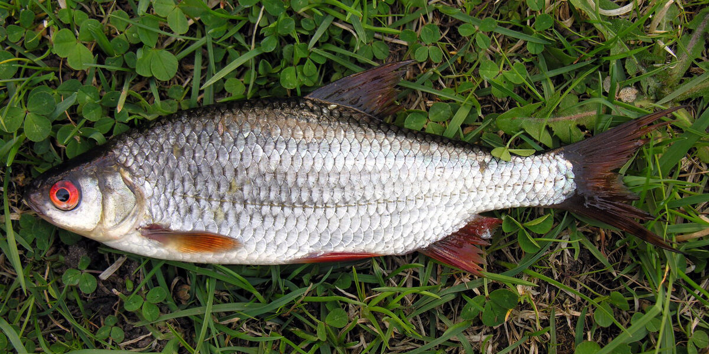

Rozpoznawanie i biologia
Wygląd i rozpoznawanie — z czym mylona
Płoć (Rutilus rutilus) ma ciało umiarkowanie wygrzbiecone, bocznie spłaszczone, pokryte dużymi, srebrzystymi łuskami; grzbiet jest ciemny, zielonkawoniebieski, a płetwy brzuszne i odbytowa pomarańczowoczerwone. Cechą rozpoznawczą jest czerwona lub pomarańczowa tęczówka oka — często z czerwoną plamką nad źrenicą. Najczęściej mylona jest ze wzdręgą (krasnopiórą): u płoci początek płetwy grzbietowej leży dokładnie nad nasadą płetw brzusznych, u wzdręgi wyraźnie za nimi; wzdręga ma też złocisty połysk, krwistoczerwone płetwy, żółtawe oko i ostro stępiony, kilowaty brzuch. Drugą rybą podobną jest młody jaź, który ma jednak mniejsze łuski, bardziej walcowate ciało i jasne, żółtawe oko. Pomocna bywa też uwaga na pysk: płoć ma otwór gębowy końcowy, lekko skierowany w dół, wzdręga — wyraźnie skierowany ku górze, co odpowiada jej zwyczajowi zbierania pokarmu spod powierzchni.
Środowisko i występowanie w Polsce
Płoć jest gatunkiem niemal wszędobylskim — występuje w całej Polsce, od małych stawów i glinianek, przez jeziora wszystkich typów, zbiorniki zaporowe i kanały, po rzeki nizinne i dolne odcinki rzek podgórskich. Spotykana jest również w wysłodzonych wodach Bałtyku, w Zalewie Szczecińskim i Wiślanym, gdzie osiąga ponadprzeciętne rozmiary. Toleruje szeroki zakres temperatur, umiarkowane zanieczyszczenie i różne typy dna, dzięki czemu w wielu zbiornikach stanowi dominujący gatunek karpiowaty. W jeziorach trzyma się latem strefy roślinności i stoków podwodnych górek, w rzekach wybiera spokojniejsze rynny, zakola i granice nurtu. Duże płocie prowadzą tryb życia ostrożniejszy niż drobnica — żerują głębiej, dalej od brzegu i często w innych porach niż masy małych ryb.
Biologia i tarło
Płoć dojrzewa płciowo w wieku dwóch–czterech lat i trze się wiosną, zwykle w kwietniu i maju, gdy woda osiągnie około 10–14 stopni. Tarło odbywa się gromadnie, na płytkich, zarośniętych stanowiskach, często z głośnym pluskiem; samce pokrywają się wówczas charakterystyczną wysypką tarłową — drobnymi, szorstkimi guzkami na głowie i ciele. Samica składa od kilkudziesięciu do ponad stu tysięcy kleistych ziaren ikry na roślinach, korzeniach i zatopionych gałęziach. Płoć rośnie wolno: ryba 25-centymetrowa ma zwykle 6–10 lat, zależnie od żyzności wody. W naturze chętnie krzyżuje się ze wzdręgą, leszczem i ukleją, a mieszańce te dodatkowo utrudniają oznaczanie ryb. Jako gatunek masowy płoć stanowi podstawę bazy pokarmowej szczupaka, sandacza, okonia i bolenia, przez co jej kondycja przekłada się wprost na stan populacji drapieżników.
Zwyczaje żerowania według pór roku
Płoć jest wszystkożerna: zjada larwy owadów, skorupiaki planktonowe, mięczaki, glony nitkowate i miękkie części roślin, a duże osobniki chętnie żerują na racicznicy. Wiosną, przed tarłem i po nim, żeruje intensywnie na płyciznach, reagując najlepiej na drobne przynęty zwierzęce. Latem rozprasza się w toni i przy roślinności; żeruje wówczas na różnych poziomach wody, od dna po strefę podpowierzchniową, a pora żerowania przesuwa się na ranki, wieczory i noce. Jesienią płocie zbijają się w duże stada i schodzą na głębsze stanowiska — to klasyczny czas łowienia grubszej płoci na zimowiskach, zwłaszcza w rzekach i kanałach. Zimą płoć pozostaje aktywna i jest jedną z najczęściej łowionych ryb spod lodu; brania są wtedy delikatne, a ryby preferują małe, wolno podawane przynęty, takie jak ochotka czy pojedynczy biały robak.
Przepisy i ochrona
Wymiar ochronny, okres ochronny i limit dobowy
Według ogólnych zasad PZW płoć nie ma wymiaru ochronnego ani okresu ochronnego. Limit dobowy jest zwykle określany wagowo: płoć mieści się w łącznym limicie ryb drobnych, orientacyjnie do 5 kg na dobę razem z innymi gatunkami nieobjętymi limitami sztukowymi, takimi jak krąp czy ukleja. Należy jednak wyraźnie zaznaczyć, że są to jedynie zasady ogólne — poszczególne okręgi PZW, łowiska specjalne i gospodarze wód wprowadzają własne regulaminy, w których limity wagowe, wymiary i zasady postępowania z rybami mogą być inne. Na niektórych wodach obowiązują na przykład ograniczenia w wywożeniu ryb drobnych ze względu na ochronę bazy pokarmowej drapieżników. Przed każdym połowem trzeba więc zweryfikować aktualne zezwolenie i regulamin okręgu, na którego wodzie się łowi, a w razie wątpliwości sprawdzić informacje u gospodarza łowiska.
Metody, taktyka i praktyka
Metody i przynęty — spławik, feeder, grunt
Płoć to ryba spławikowa par excellence: bat, tyczka, odległościówka i bolonka pokrywają większość sytuacji od stawu po rzekę z uciągiem. Standardem jest żyłka główna 0,12–0,14 mm, przypon 0,08–0,12 mm, smukły spławik 0,5–3 g (w rzece cięższy, przystosowany do przytrzymywania zestawu) i haczyk 14–20. Na większych dystansach i głębszej wodzie znakomicie pracuje lekki feeder lub picker z małym koszyczkiem i krótkim przyponem; zimą i wczesną wiosną warto stosować przypony dłuższe i wolniej opadającą przynętę. Przynęty podstawowe to białe robaki, pinka, ochotka, czerwone robaki, ciasto, pęczak i konopie — duża płoć słynie z upodobania do ziarna konopi i kukurydzy. Pod lodem łowi się ją na mormyszkę z ochotką lub najmniejsze błystki podlodowe. Zasada ogólna: im zimniejsza woda i ostrożniejsze ryby, tym mniejszy haczyk, cieńszy przypon i drobniejsza przynęta.
Taktyka łowienia i nęcenie
Klucz do płoci leży w nęceniu, bo to ryba stadna, którą zanętą można ściągnąć i utrzymać w łowisku. Na start podaje się zwykle kilka kul drobnoziarnistej, ciemnej zanęty, a potem donęca małymi porcjami w rytmie brań — gdy brania słabną, częściej; gdy ryby żerują pewnie, oszczędniej. W zimnej wodzie ilość zanęty drastycznie się ogranicza, czasem do samej zanęty z dodatkiem szczypty ochotki. Ważne jest czytanie poziomu żerowania: jeśli brania następują w opadzie, warto przejść na zestaw z przesuniętym obciążeniem i łowić „na zjazd", jeśli przy dnie — ustabilizować przynętę. W rzece skuteczne jest przytrzymywanie i puszczanie zestawu w smudze zanęty, które prowokuje brania w momencie uniesienia przynęty. Duże płocie wymagają ciszy, dalszych stanowisk i selekcji przynęt — konopie z kukurydzą skutecznie odsiewają drobnicę. Zacięcie powinno być delikatne, z nadgarstka, bo płoć ma miękki pysk i łatwo ją wyrwać.
Rekordy Polski — orientacyjnie
Rejestry wędkarskie notują płocie o długości około 45–50 cm i masie w okolicach 1,5–2 kg, przy czym do najstarszych zgłoszeń warto podchodzić z ostrożnością, bo część rekordowych „płoci" mogła być w rzeczywistości mieszańcami z leszczem lub wzdręgą, które osiągają wyższą masę. W praktyce wędkarskiej płoć powyżej 30 cm uznaje się za bardzo dobrą, a ryby 35–40 cm to okazy, z których słyną zalewy przymorskie, duże jeziora mazurskie i niektóre zbiorniki zaporowe. Kilogramowa płoć pozostaje dla większości wędkarzy rybą życia. Wolne tempo wzrostu sprawia, że takie okazy mają kilkanaście i więcej lat — to dodatkowy argument, by wielkie płocie wypuszczać.
Wartość kulinarna i zasady C&R
Mięso płoci jest smaczne, ale drobnoościste, dlatego kulinarnie najlepiej sprawdzają się ryby większe, gęsto nacinane przed smażeniem, marynowane w occie (ości miękną) lub przerabiane na kotlety rybne. Tradycją wielu regionów są też płocie wędzone i suszone. Z drugiej strony płoć pełni kluczową rolę pokarmową w ekosystemie, więc masowe zabieranie drobnicy nie ma uzasadnienia ani kulinarnego, ani gospodarczego. Praktykując zasadę złów i wypuść, należy rybę odhaczać szybko, mokrymi rękami, najlepiej nad matą lub nad wodą; przy łowieniu drobnicy warto używać haczyków bezzadziorowych lub z mikrozadziorem. Płoć przetrzymywana w siatce powinna trafić do obszernej siatki wyczynowej rozłożonej w głębszej wodzie, a po zakończeniu łowienia być wypuszczona spokojnie, bez wysypywania z wysokości. Każdorazowo trzeba stosować się do regulaminu łowiska, który może regulować zarówno zabieranie, jak i wypuszczanie ryb.
Ciekawostki
Płoć jest jedną z najliczniejszych ryb słodkowodnych Europy i gatunkiem wskaźnikowym żyzności wód — jej masowy rozwój kosztem innych gatunków często sygnalizuje postępującą eutrofizację jeziora. W zalewach przymorskich tworzy formy półwędrowne, które żerują w wodzie słonawej, a na tarło wchodzą do rzek. Duże płocie z wód z racicznicą wykształcają silniejsze zęby gardłowe, którymi miażdżą muszle małży — to kolejny przykład plastyczności pokarmowej tego gatunku. W zawodach spławikowych płoć jest podstawową rybą punktową, a cała nowoczesna szkoła delikatnego łowienia spławikowego rozwinęła się w dużej mierze właśnie wokół niej. Mieszańce płoci z leszczem, ze względu na szybszy wzrost, regularnie mylone są z okazałymi płociami i bywają zgłaszane jako rekordy.
FAQ — najczęstsze pytania
Jak odróżnić płoć od wzdręgi?
Najpewniejsza cecha to położenie płetwy grzbietowej: u płoci zaczyna się nad nasadą płetw brzusznych, u wzdręgi wyraźnie za nią. Dodatkowo płoć ma czerwonopomarańczowe oko i srebrzysty połysk, a wzdręga oko żółtawe, połysk złocisty, krwistoczerwone płetwy i pysk skierowany ku górze. Mieszańce obu gatunków mają cechy pośrednie i bywają trudne do oznaczenia.
Czy płoć ma wymiar i okres ochronny?
Według ogólnych zasad PZW płoć nie ma wymiaru ani okresu ochronnego, a jej zabieranie mieści się w wagowym limicie ryb drobnych, orientacyjnie 5 kg na dobę łącznie z innymi gatunkami nielimitowanymi sztukowo. Okręgi PZW i łowiska specjalne mogą jednak wprowadzać własne ograniczenia, dlatego zawsze trzeba sprawdzić aktualny regulamin wody, na której się łowi.
Na co najlepiej łowić dużą płoć?
Grubsza płoć dobrze reaguje na konopie, kukurydzę, pęczak, ciasto i większe przynęty zwierzęce podawane przy dnie, z dala od zgiełku drobnicy. Pomaga nęcenie ziarnami, dalsze stanowiska, cichsza pora (świt, zmierzch, noc) oraz delikatny, ale nie przesadnie cienki zestaw. Jesień i wczesna wiosna to klasyczne okresy łowienia okazów na zimowiskach.
Czy płoć bierze zimą?
Tak, płoć należy do najaktywniejszych zimą ryb karpiowatych i jest podstawową zdobyczą wędkarzy podlodowych. Wymaga jednak bardzo delikatnych zestawów, małych przynęt (ochotka, pojedyncza pinka, mormyszka) i oszczędnego nęcenia. Brania są subtelne, więc kluczowa jest czuła sygnalizacja i cierpliwość w wyszukiwaniu stada, które zimą stoi w skupiskach na głębszych stanowiskach.
Źródła i weryfikacja
Artykuł ma charakter przeglądowy i edukacyjny. Dane o wymiarach, okresach ochronnych i limitach połowowych przedstawiono orientacyjnie według ogólnych zasad PZW na dzień publikacji — okręgi PZW oraz gospodarze łowisk stosują własne regulaminy, dlatego przed każdym wyjazdem należy zweryfikować aktualne zezwolenie, regulamin okręgu i informacje na pzw.org.pl. Opisane metody i taktyki wynikają z praktyki wędkarskiej i nie stanowią gwarancji wyników połowu. Zobacz też: kalendarz brań płoci — kiedy bierze najlepiej.